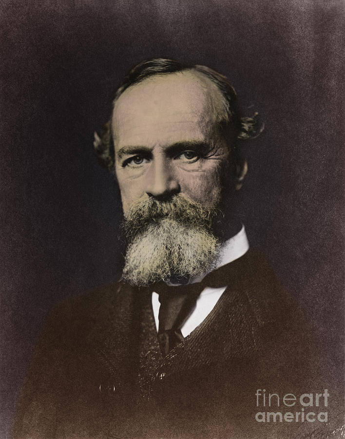
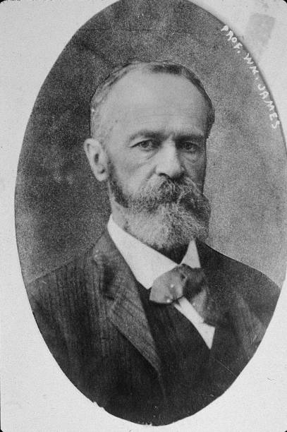

“The self of all the selves is the stream of conscious experience, the thought as it passes.” William James
Physical things a person considers part of themselves.
How a person is perceived by others.
Inner values, conscience, moral standards, and dreams.